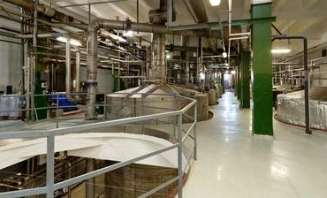
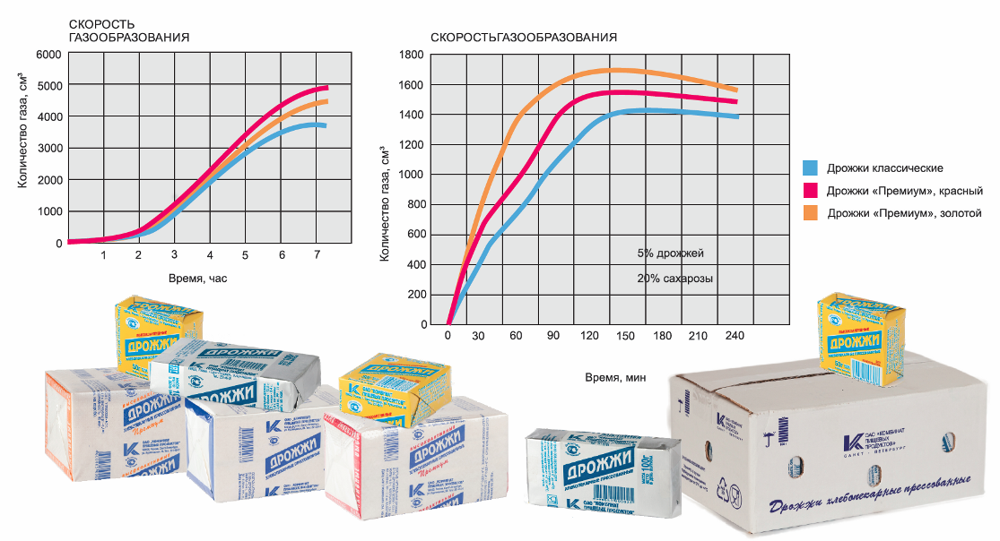

+7(812)251-6510
+7(812)251-6510 
Особенности производства:
Контроль качества на предприятии осуществляется нашей лабораторией, регулярно осуществляющий контроль качества. Процесс производства — это создание и контролирование благоприятных условий для размножения дрожжей. Эти условия — наличие достаточного питания и доступ кислорода. Основными источниками питания для дрожжей служат легкоусвояемые сахара, то есть глюкоза, мальтоза, сахароза, галактоза. Также нужны минеральные вещества, витамины, чтобы клетка имела все необходимое для строительства почки. Следовательно, для производства дрожжей надо подготовить питательную среду, поместить в нее дрожжи и, по мере того как дрожжи будут поглощать вещества из питательной среды, добавлять питание и продувать всю эту массу кислородом. Когда масса заполнит емкость до нужного значения, процесс необходимо остановить и провести сепарацию — отделить дрожжевые клетки от среды. После этого остается лишь процесс формирования конечного продукта. Как правило, это брикеты, состоящие из дрожжевых клеток, очищенных от среды, где они росли, и прошедших специальную промывку и фильтрацию в вакуум-фильтрах. Брикетированные дрожжи содержат в себе 32% дрожжевых клеток и 68% воды. При производстве сушеных гранулированных дрожжей технология размножения аналогична, правда, при этом используются другие штаммы — те, что более устойчивы к финальной стадии производства — сушке. Сушка (обезвоживание) — это экстремальное воздействие на клетку, и не все культуры способны его выдержать. Продукт проходит стадию прессованных дрожжей, которые затем выдавливаются через экструдер тонкими «вермишелинками». После этого их мелко нарезают и отправляют в сушильный аппарат. Там с помощью нагнетаемого теплого воздуха дрожжи обезвоживают. На этом процесс заканчивается, продукт готов к упаковке.
Контроль качества.
Мелассу для микробиологического анализа отбирают в стерильную посуду в количестве около 100 г из средней пробы, доставленной в лабораторию завода (см. "Отбор проб"). Степень обсемененности мелассы микроорганизмами определяют по двум показателям: общему количеству микроорганизмов в 1 г мелассы; видовому составу (процентное соотношение) микрофлоры, в частности групп микроорганизмов, являющихся вредными для дрожжевого производства. Посев мелассы производят одновременно как в глубь агаровых питательных сред, так и на поверхность. Для посева используют следующие питательные среды: агар-дрожжевая вода с содержанием 4% сахарозы для учета общего количества микроорганизмов в 1 г; агар-сусло с мелом для выявления кислотообразующих и спорообразующих бактерий; молочный агар для выявления гнилостных бактерий. Анализ производят по следующей схеме: подготовка питательных сред, разбавление материала, посев, учет количества микроорганизмов, определение состава микрофлоры. Все необходимые питательные среды должны быть приготовлены заранее и простерилизованы. Для анализа одного образца мелассы используют следующие среды: четыре пробирки агар-дрожжевой воды с содержанием 4% сахарозы (количество среды в каждой пробирке должно быть не менее 15 мл), две - с агар-суслом, две - с водяным агаром. Все отобранные пробирки помещают в водяную баню, нагревают до кипения. Когда агар расплавится и станет жидким, без комков, баню снимают с нагревательного прибора и оставляют для охлаждения. Как только температура воды в бане снизится до 65-70 °С, вынимают пробирку с агаром-суслом и всыпают в нее 0,3-0,4 г стерилизованного измельченного мела при соблюдении всех правил асептики. Смесь тщательно перемешивают и выливают в стерильную чашку Петри. Среду равномерно распределяют по дну, следя за тем, чтобы мел не осел на дно. Подготовка молочного агара заключается в следующем. В расплавленный водяной агар добавляют стерильное обезжиренное молоко (30-40%), перемешивают и оставляют в водяной бане вместе с остальными пробирками. Пробирки охлаждают в водяной бане до температуры 48-50 °С. Подготовка исследуемого образца для анализа - разведение. Мелассу в количестве 20 г отвешивают на технохимических весах в стерильном химическом стакане (вместимостью 250 мл) и смешивают ее с 180 мл стерильной водопроводной воды - первое разведение (в 10 раз). После тщательного размешивания из первого разведения стерильной градуированной пипеткой отбирают 1 мл и добавляют 9 мл стерильной водопроводной воды - второе разведение (в 100 раз). 